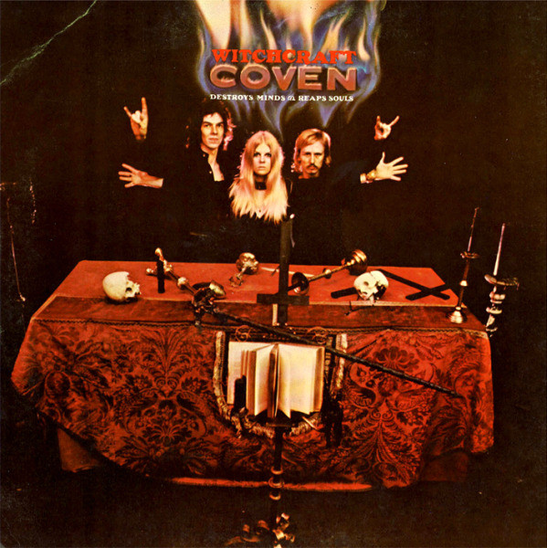

Proto-Metal
Heavy Metal wasn't suddenly brought into existence with the sound it has today. Over the course of a few years the sound that would become Heavy Metal would be developed through the boundary pushing of Hard Rock, Psychodelic Rock, and Experimental bands at the time.
A few examples of highly influential songs for the development of Heavy Metal include:
- "Voodoo Child (Slight Return)" by The Jimi Hendrix Experience (1968)
- "Helter Skelter" by The Beatles (1968)
- "Communication Breakdown" by Led Zeppelin (1969)
- "21st Century Schizoid Man" by King Crimson (1969)
What makes these songs so influential though? Well, these songs all have pieces to the puzzle that would eventually become Heavy Metal. Whether it is the energy and subject matter of "Helter Skelter" or "Communication Breakdown" or the riffs of "Voodoo Child (Slight Return)" and "21st Century Schizoid Man". Without the inspiration that they bands sparked, their would be no Heavy Metal.
There is one band that I have left out though. Occult Rock pioneers, Coven. Coven is not a super well known band by any means but their debut album, "Witchcraft Destroys Minds & Reaps Souls" (1969), features a lot of imagery that would become associated with Heavy Metal. Coven uses the devil horns throughout much of the promotional photos, along with inverted crosses and occult imagery, something that would become tied with Heavy Metal through the years. Coven's bassist, Michael Gregory Osbourne, is even credited as "Oz Osbourne" on the album and the opening track of said album is titled "Black Sabbath". Don't these sound familiar? It is theorized Black Sabbath were inspired by Coven. No confirmation has ever been given though.
